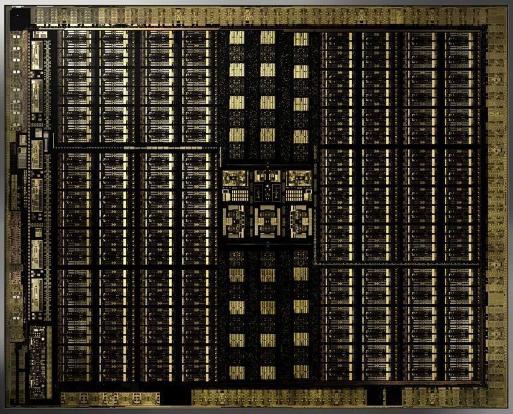
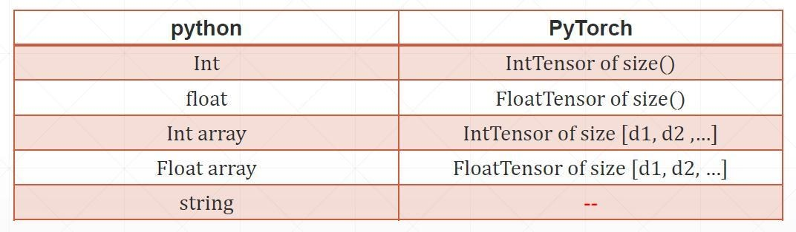
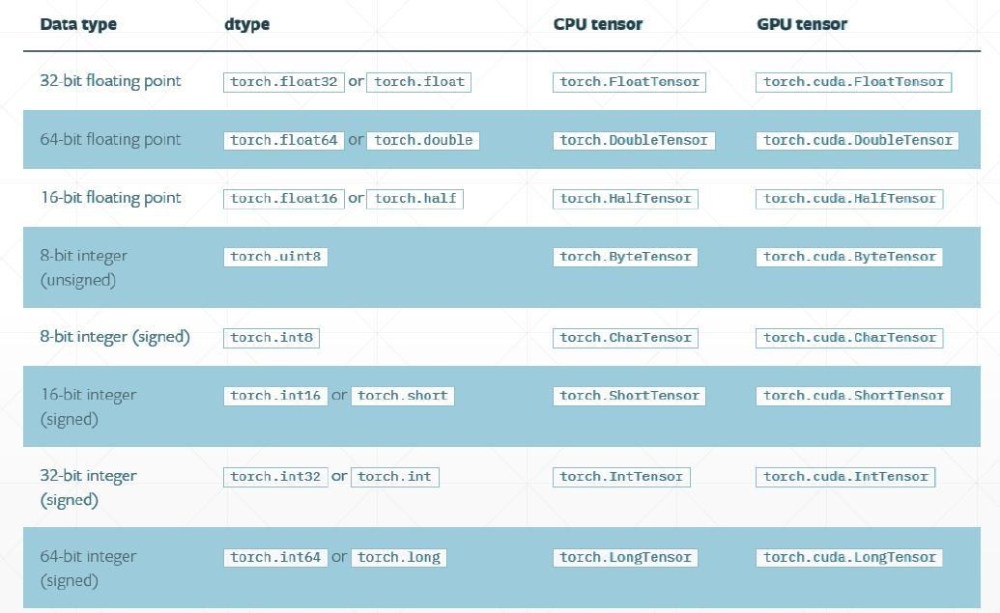
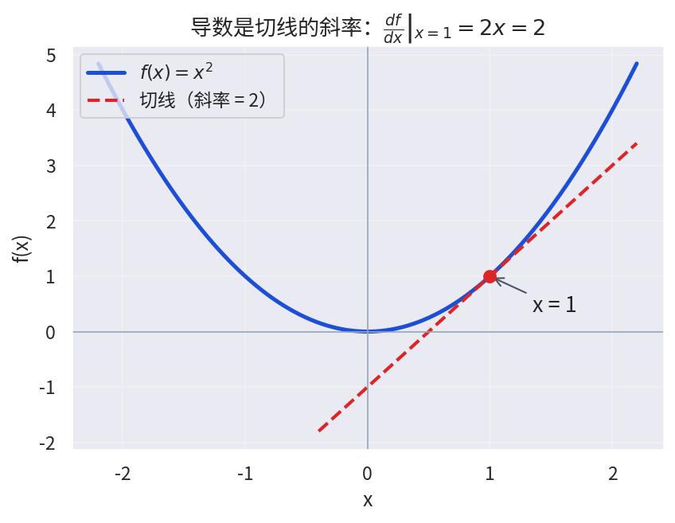
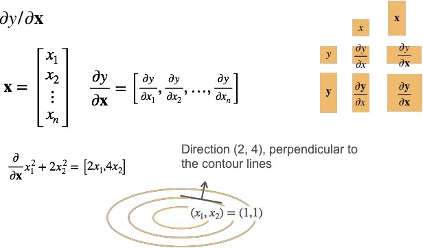
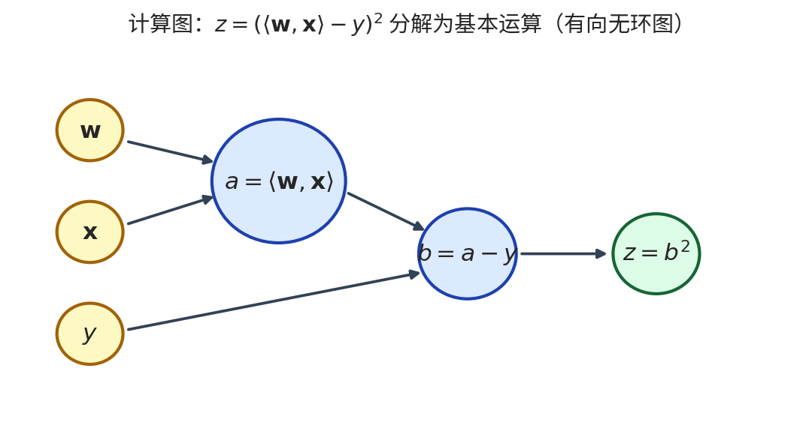
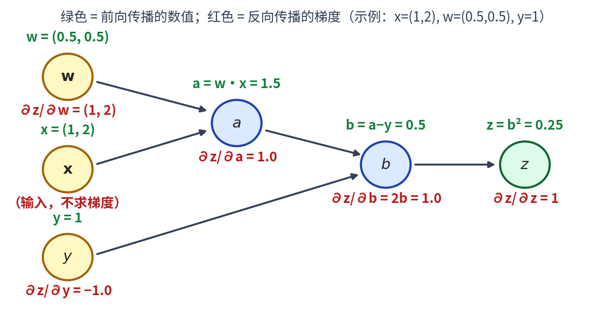
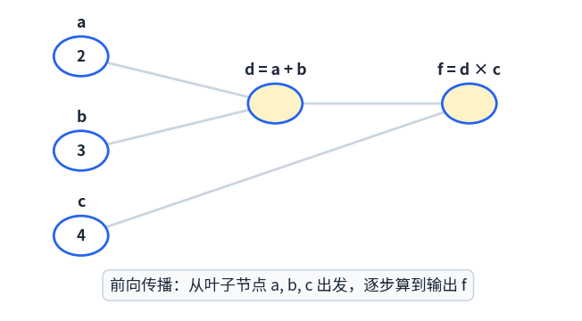

第02讲 深度学习基础
一、线性代数基础：标量与向量
深度学习的所有计算——从一次房价预测到千亿参数的大模型——最终都可以归结为标量、向量、矩阵之间的运算。本节用最短路径复习这些数学对象，并重点关注它们在深度学习中的实际含义。
1.1 标量：最简单的数学对象
标量（scalar）就是单独的一个数，例如学习率 \(0.01\)、某张图片的类别标签 \(3\)、某次训练的损失值 \(0.25\)。标量之间可以进行加减乘除、指数、对数等简单运算。
float 或 int，或者一个"0 维张量"。判断一个量是不是标量，只需问一句：它有没有"方向"或"下标"？没有，就是标量。
1.2 向量：一串有序的数
向量（vector）是把若干标量排成一列（或一行）得到的对象：
向量的加法和数乘都是逐元素进行的。在深度学习中，一个样本的特征（卧室数、卫浴数、面积）就是一个向量；一个模型的全部参数也可以拉直成一个很长的向量。
1.3 范数：向量的"长度"
范数（norm）用来度量向量的大小。最常用的是 \(L^p\) 范数：
| 范数 | 定义 | 深度学习中的典型用途 |
|---|---|---|
| \(L^1\) 范数 | \(\|\mathbf{x}\|_1 = \sum_i |x_i|\) | L1 正则化，让权重变得稀疏（很多权重变成 0） |
| \(L^2\) 范数 | \(\|\mathbf{x}\|_2 = \sqrt{\sum_i x_i^2}\) | 欧氏距离；权重衰减（weight decay）惩罚的就是它 |
| \(L^\infty\) 范数 | \(\|\mathbf{x}\|_\infty = \max_i |x_i|\) | 衡量最大扰动，对抗样本研究中常用 |
1.4 点积与正交性
两个等长向量的点积（dot product，也叫内积）定义为：
点积同时有两种读法：代数上它是对应元素相乘再求和；几何上它度量两个向量方向的接近程度——夹角 \(\theta\) 越小，点积越大。
当 \(\langle \mathbf{x}, \mathbf{y} \rangle = 0\) 时，称向量 \(\mathbf{x}\) 与 \(\mathbf{y}\) 正交。一个有用的性质是：如果两个向量都与第三个向量正交，那么它们的任意线性组合也与第三个向量正交。这一性质是后面理解正交矩阵、特征向量分解的基础。
动手试一试：点积的几何直觉——拖动滑块改变两个向量的长度和方向，观察点积、夹角如何变化；当夹角为 90° 时点积恰好为 0（正交）：
二、矩阵及其运算
2.1 矩阵：向量的"批量"
矩阵（matrix）是把数按行、列排成的矩形阵列：
矩阵的加法和数乘同样是逐元素的。可以把矩阵想成"一批样本的特征表"：每一行是一个样本，每一列是一个特征。
2.2 矩阵乘法：神经网络最核心的运算
矩阵 × 向量：结果是一个向量，其每个元素是矩阵对应行与向量的点积：
矩阵 × 矩阵：\(\mathbf{C} = \mathbf{A}\mathbf{B}\)，其中 \(c_{ij}\) 是 \(\mathbf{A}\) 的第 \(i\) 行与 \(\mathbf{B}\) 的第 \(j\) 列的点积。注意矩阵乘法一般不满足交换律：\(\mathbf{A}\mathbf{B} \neq \mathbf{B}\mathbf{A}\)。
一个全连接层做的事就是 \(\mathbf{h} = \sigma(\mathbf{W}\mathbf{x} + \mathbf{b})\)：权重矩阵 \(\mathbf{W}\) 乘输入向量 \(\mathbf{x}\)，再加偏置、过激活函数。训练时一次性送入一个批量（batch）的样本，就是一次矩阵 × 矩阵。可以说，深度学习工程的本质，就是把一切都组织成高效的矩阵乘法。
2.3 矩阵的范数
矩阵最常用的是 Frobenius 范数——把矩阵拉直成向量后取 \(L^2\) 范数：
它衡量矩阵"整体有多大"。对权重矩阵做 Frobenius 范数惩罚，就是多层网络版本的权重衰减。
2.4 特征值与特征向量
对于一个给定的线性变换 \(\mathbf{A}\)，如果某个非零向量 \(\mathbf{v}\) 经过变换后仍然停留在原来的直线上，只是长度或方向被缩放，那么 \(\mathbf{v}\) 就是 \(\mathbf{A}\) 的特征向量，缩放倍数 \(\lambda\) 就是对应的特征值：
2.5 特殊矩阵
| 类型 | 定义 | 要点与用途 |
|---|---|---|
| 对称矩阵 | \(\mathbf{A} = \mathbf{A}^\top\) | 协方差矩阵、Hessian 矩阵；总可特征分解 |
| 正定矩阵 | 对任意 \(\mathbf{x} \neq 0\) 有 \(\mathbf{x}^\top \mathbf{A}\mathbf{x} > 0\) | 特征值均为正（半正定则非负）；二次型损失为碗状，有唯一最小值 |
| 正交矩阵 | 所有列（行）向量都是单位正交向量，即 \(\mathbf{Q}^\top\mathbf{Q} = \mathbf{I}\) | 逆就是转置：\(\mathbf{Q}^{-1} = \mathbf{Q}^\top\)；保持长度和角度不变 |
| 置换矩阵 | 每行每列恰好只有一个 1，其余为 0 | 乘上它相当于重新排列向量元素；正交矩阵的特例 |
三、GPU 与向量化计算
3.1 GPU 为什么"十分喜爱"矩阵和向量
CPU 擅长处理复杂的串行逻辑，但核心数量有限；GPU 则为图形渲染而生，内部有成千上万个简单计算核心，可以同时对大量数据执行同一种运算。矩阵乘法恰好是"同一运算、海量数据"的完美代表：计算 \(\mathbf{C} = \mathbf{A}\mathbf{B}\) 的每个元素 \(c_{ij}\) 都互不依赖，可以分派给不同核心并行完成。

3.2 向量化 vs for 循环
要计算线性模型 \(\hat{y} = \mathbf{w}^\top\mathbf{x} + b\)（\(\mathbf{w}\) 和 \(\mathbf{x}\) 都是 \(n\) 维列向量），有两种写法：
for 循环版本逐个访问 w[i] 和 x[i]，Python 解释器每轮都要做类型检查和索引计算，\(n\) 很大时非常慢；而 np.dot 把整个计算交给底层 C/Fortran 库一次性完成，在 GPU 上还可以进一步并行。同样的数学结果，速度常常相差几十到上百倍。
四、数据表示与张量
4.1 从标量到 5 维张量：一切都是张量
深度学习框架把所有数据统一表示为张量（tensor）——可以把张量理解为"任意维度的数组"。不同维度的张量对应不同的数据形态：
| 维度 | 数学对象 | 示例 | 深度学习中对应 |
|---|---|---|---|
| 0 维 | 标量 | 1.0 | 一个类别标签、一个损失值 |
| 1 维 | 向量 | [1.0, 2.7, 3.4] | 一个样本的特征向量 |
| 2 维 | 矩阵 | [[1.0, 2.7, 3.4], [5.0, 0.2, 4.6]] | 一批样本的特征矩阵（样本数 × 特征数） |
| 3 维 | 张量 | 形状（高 × 宽 × 通道） | 一张 RGB 图像 |
| 4 维 | 张量 | 形状（批量 × 高 × 宽 × 通道） | 一批 RGB 图像 |
| 5 维 | 张量 | 形状（批量 × 时间 × 高 × 宽 × 通道） | 一批 RGB 视频 |
(32, 3, 224, 224)，要立刻读出：32 张图片，每张 3 通道、224×224 像素。上表按"高 × 宽 × 通道"（NHWC，TensorFlow 惯例）书写是为了便于从图像直觉理解，两种顺序只是通道维摆放位置不同。
4.2 PyTorch 中的张量类型
Python 原生类型与 PyTorch 张量的对应关系如下：

进一步地，每种张量还区分数值精度（dtype）与所在设备（CPU / GPU）：

torch.long 而不是 float。
五、矩阵微积分
5.1 标量求导回顾
训练神经网络的每一步都依赖求导。先回顾一元函数的求导：导数是函数曲线在某点处切线的斜率。例如 \(f(x) = x^2\) 的导数 \(\frac{df}{dx} = 2x\)，在 \(x = 1\) 处斜率为 2。

常用求导规则一览：
| 规则 | 公式 |
|---|---|
| 幂函数 | \(\frac{d}{dx} x^n = n x^{n-1}\) |
| 和/差 | \(\frac{d}{dx}(u \pm v) = \frac{du}{dx} \pm \frac{dv}{dx}\) |
| 乘积 | \(\frac{d}{dx}(uv) = \frac{du}{dx}v + u\frac{dv}{dx}\) |
| 商 | \(\frac{d}{dx}\frac{u}{v} = \frac{\frac{du}{dx}v - u\frac{dv}{dx}}{v^2}\) |
| 三角/指数/对数 | \((\sin x)' = \cos x\)，\((\exp x)' = \exp x\)，\((\log x)' = \frac{1}{x}\) |
| 链式法则 | \(y=f(u),\ u=g(x) \Rightarrow \frac{dy}{dx} = \frac{dy}{du}\cdot\frac{du}{dx}\) |
5.2 梯度：把求导推广到向量
当函数的自变量从标量变成向量时，导数也升级为梯度（gradient）：多元函数 \(y = f(\mathbf{x})\) 对每个分量求偏导，排成一行就是梯度：

5.3 分子布局与分母布局
向量求导的结果"横着排还是竖着排"，文献中有两种约定：
| 布局约定 | 含义 |
|---|---|
| 分子布局（numerator-layout，Jacobian 形式） | 导数的形状跟随分子，标量对向量求导得到行向量 |
| 分母布局（denominator-layout，Hessian 形式） | 导数的形状跟随分母，标量对向量求导得到列向量 |
5.4 常用的向量/矩阵求导公式
以下公式在推导线性回归、反向传播时会反复用到（设 \(\mathbf{a}\)、\(\mathbf{A}\) 不是 \(\mathbf{x}\) 的函数）：
| 公式（分子布局） | 说明 |
|---|---|
| \(\frac{\partial \mathbf{a}^\top \mathbf{x}}{\partial \mathbf{x}} = \mathbf{a}^\top\) | 线性函数的导数就是系数本身 |
| \(\frac{\partial \mathbf{x}^\top \mathbf{A} \mathbf{x}}{\partial \mathbf{x}} = \mathbf{x}^\top(\mathbf{A} + \mathbf{A}^\top)\) | 二次型求导；若 \(\mathbf{A}\) 对称则化简为 \(2\mathbf{x}^\top\mathbf{A}\) |
| \(\frac{\partial \|\mathbf{x}\|^2}{\partial \mathbf{x}} = 2\mathbf{x}^\top\) | 平方范数的梯度，权重衰减的梯度来源 |
把求导推广到矩阵后，形状规则可以概括为一句话：标量对矩阵求导得到同形状矩阵；向量对向量求导得到雅可比矩阵。实际工程中我们很少手推这些公式——交给自动微分即可，但理解它们是看懂反向传播的前提。
5.5 链式法则
复合函数的求导遵循链式法则，它是整个反向传播的数学基础：
向量版本里，局部导数按矩阵乘法依次相乘，形状必须能匹配。神经网络就是一层层复合起来的超长函数 \(f^{(L)} \circ \cdots \circ f^{(2)} \circ f^{(1)}\)，链式法则让我们能把"损失对第一层参数的导数"拆成一连串简单导数的乘积。
六、自动微分与计算图
6.1 三种求导方式对比
| 方式 | 原理 | 优缺点 |
|---|---|---|
| 符号微分 | 像手算一样，对表达式做代数变换得到导数公式 | 精确，但表达式容易"爆炸"（越求导越长） |
| 数值微分 | 用定义近似：\(\frac{df}{dx} = \lim_{h\to0}\frac{f(x+h)-f(x)}{h}\)，取很小的 \(h\) 估算 | 简单通用，但有舍入误差，且每个参数要算两次函数值，代价高 |
| 自动微分（AD） | 把函数分解为基本算子，对每个基本算子套用符号微分规则，再代入数值沿链式法则组合 | 既精确又高效，是 PyTorch / TensorFlow 的核心引擎 |
loss.backward()，背后跑的就是自动微分。
6.2 计算图：把函数画成有向无环图
以单层网络的平方损失为例：
把每一步基本运算画成节点、依赖关系画成有向边，就得到计算图（computational graph）——一张有向无环图（DAG）：

6.3 显式构造与隐式构造
深度学习框架构建计算图的方式分两类：
| 方式 | 代表框架 | 特点 |
|---|---|---|
| 显式构造（静态图） | TensorFlow 1.x、Theano、MXNet（符号式） | 先完整定义计算图，再灌入数据执行；便于全局优化和部署 |
| 隐式构造（动态图） | PyTorch、MXNet（命令式） | 每执行一行代码就实时记录到图中；调试直观，可以配合 Python 控制流 |
本课程使用 PyTorch，其动态图风格如下：
requires_grad=True 告诉 PyTorch"请追踪以该张量为起点的所有运算"；执行运算时框架在后台悄悄把计算图搭好；调用 loss.backward() 后，W_h.grad 和 W_x.grad 里就存好了 \(\partial\,loss / \partial\,\mathbf{W}\)。
七、正向传播与反向传播
7.1 链式法则的两种计算顺序
对计算图应用链式法则求 \(\frac{\partial z}{\partial \mathbf{w}}\)，可以从两头开始：
| 模式 | 计算方向 | 适用场景 |
|---|---|---|
| 正向模式（forward mode） | 从输入端开始：\(\frac{\partial a}{\partial \mathbf{w}} \to \frac{\partial b}{\partial \mathbf{w}} \to \frac{\partial z}{\partial \mathbf{w}}\) | 输入少、输出多时高效 |
| 反向模式（reverse mode，即反向传播） | 从输出端开始：\(\frac{\partial z}{\partial z} \to \frac{\partial z}{\partial b} \to \frac{\partial z}{\partial a} \to \frac{\partial z}{\partial \mathbf{w}}\) | 输出少、参数多时高效——这正是深度学习的情形（一个标量损失，上百万参数） |
7.2 反向传播逐步推演
仍以上一节的计算图为例，取 \(\mathbf{x} = (1, 2)\)、\(\mathbf{w} = (0.5, 0.5)\)、\(y = 1\)，先看前向数值，再看梯度如何"逆流而上"：

再看一个更小的例子 \(f = (a+b)\times c\)（取 a=2, b=3, c=4），下面这张动图把前向求值和梯度逆流的完整过程连起来演示：

把反向传播写成通用步骤：
- 1前向传播：沿计算图逐节点求值，并缓存每个中间结果（反向时要用）。
- 2初始化：从输出节点出发，令 \(\partial z / \partial z = 1\)。
- 3逆向遍历：对每个节点读取上一步的梯度和缓存的中间值，乘以该节点的局部导数，把梯度传向它的输入。
- 4到达参数节点：得到的梯度存入参数的
.grad，供优化器更新使用。
八、本讲小结与自测
8.1 知识要点回顾
| 主题 | 必须掌握的内容 |
|---|---|
| 向量与矩阵 | 逐元素运算、点积的几何意义、矩阵乘法的"行×列"规则、\(L^p\) / Frobenius 范数 |
| 特殊矩阵 | 对称矩阵可特征分解；正定 ↔ 特征值全正；正交矩阵 \(\mathbf{Q}^\top\mathbf{Q}=\mathbf{I}\) |
| 向量化 | GPU 并行矩阵运算；用 np.dot 代替 for 循环 |
| 张量 | 0~5 维张量与数据的对应关系；批量维度在第 0 维；dtype 与设备一致性 |
| 矩阵微积分 | 梯度 = 偏导向量；分子/分母布局；链式法则的向量形式 |
| 自动微分 | 三种微分方式的区别；计算图 DAG；PyTorch 动态图与 backward() |
| 反向传播 | 反向模式为何适合深度学习；逐步推演梯度 |
8.2 课堂自测
requires_grad 设为 True 会发生什么？requires_grad=True 后，PyTorch 会追踪以它为起点的所有运算并构建动态计算图，调用 backward() 时就能算出它的梯度并存入 .grad。